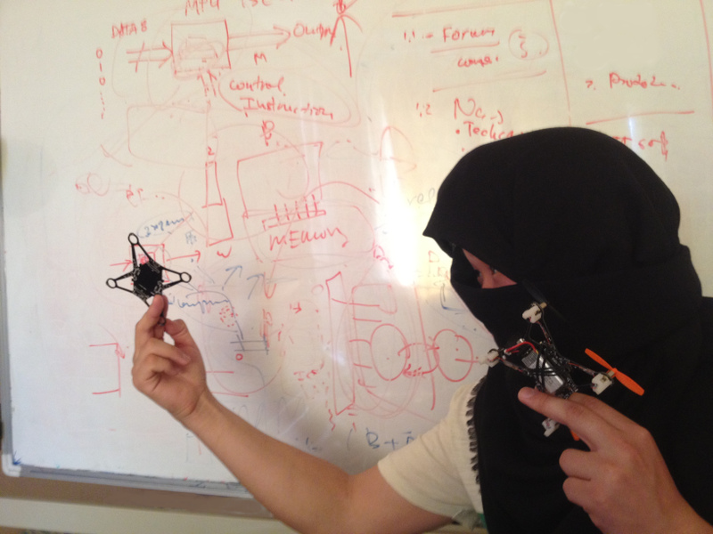

Q-Shield demonstrations and features
In this post, I would like to share main features of Q-Shield:
- PCB body frame size 10x10 cm and 3 cm in height (including Spark Core)
- Soft plastic propellors with diameter of 5.5 cm
- IMU sensor
- Digital Barometer
- 2 RGB LEDs with controllable by software
- 4 red LEDs on corners for indication
- Expansion ports for power source and I2C communication
- Li-Po battery of 380 mAh
- Charging is done through a mini-USB connector
Another very cool feature is that, it is actually an authentic ninja shuriken! Don't believe it? Check out this picture of a real shinobi using it in action. xD
How Do I Use the Nano Quadcopter?
Before plugging in the Spark core, include Q-Shield library with Spark firmware, compile, and flash it. That is it! You now have a nanoquadcopter to tinker with. Grab your controller!
The quad can be controlled through an android app or anything that is MAVLink enabled. Control inputs, parameter configuration, and flight logging are all done by MAVLink and MAVLink based GUI applications.
Below is a video of Q-SHIELD in Action! In this close up (yeah very shaky) recording, we tried to cover some basic flight functionalities, such as taking off hovering, etc. It is controlled by QGroundControl and a PS joystick. Please enjoy!